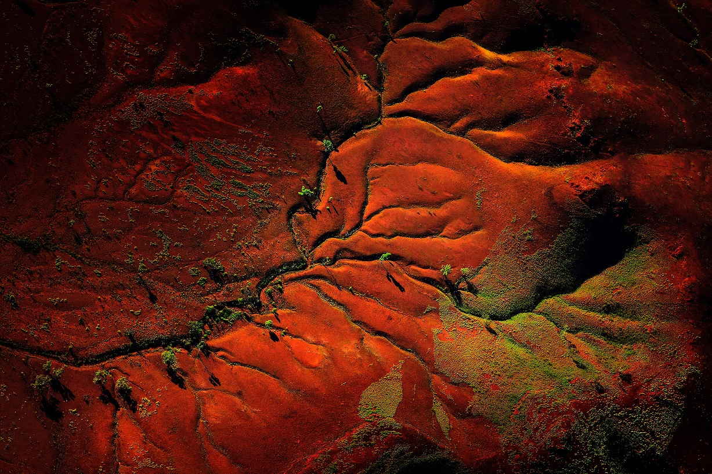
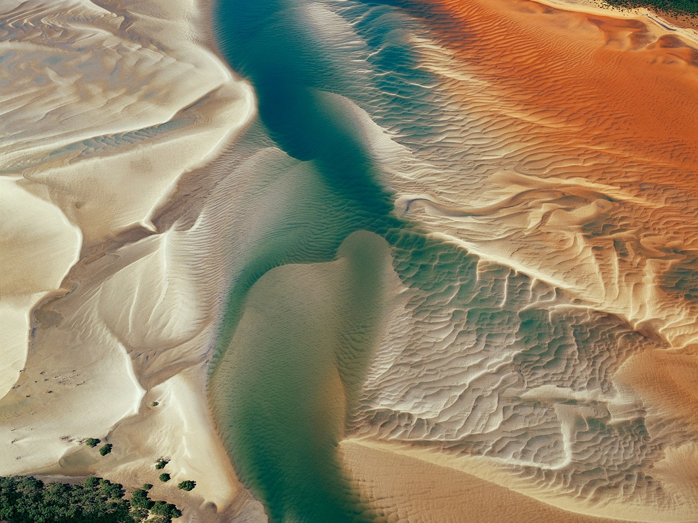
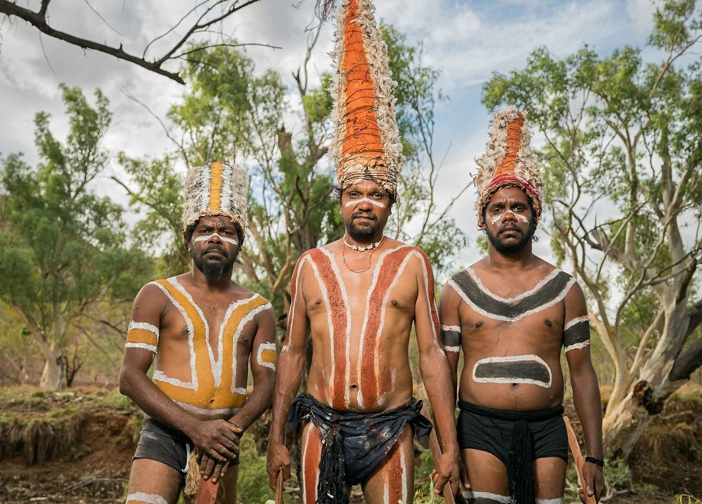

Content extracted from maptia.com
Dan Proud

"An epic and ancient landscape, deeply entwined with the artistic, musical,
and spiritual traditions of Indigenous Australians, the Outback is one of the largest remaining,
intact natural areas on Earth. A cultural, ecological, and geological wonder,
I explore and capture these vibrant regions on foot and from the air."
Richard Woldendorp

"The Australian landscape has always appealed to me. There is something about it— its spaciousness,
its character, the light and its uniqueness. I have a preference for the aerial perspective,
and each flight becomes a flight of discovery as landscapes tell us about their natural history
and reveal their evolution."
Brook Mitchell

"In the harsh deserts of Western Queensland, the men of the Marrinyama tribe carry on ancient
traditions in a fight to save their culture, and just maybe themselves, in the process."